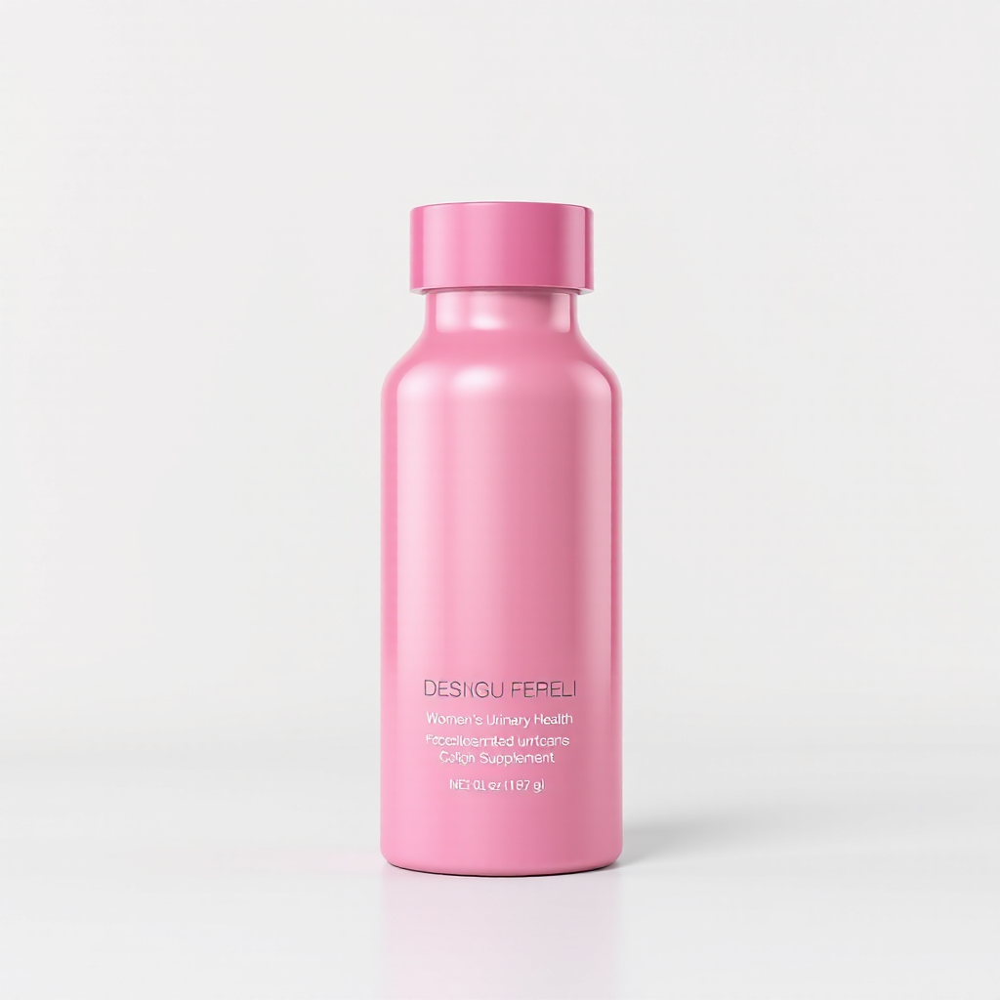
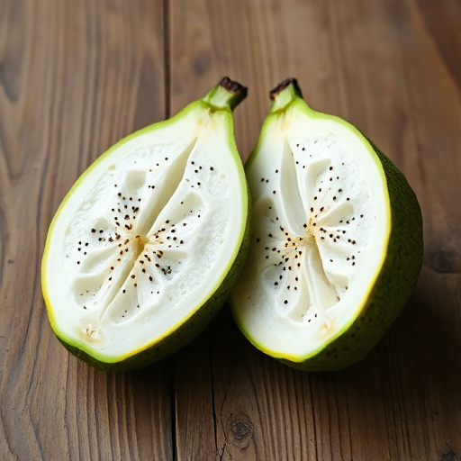
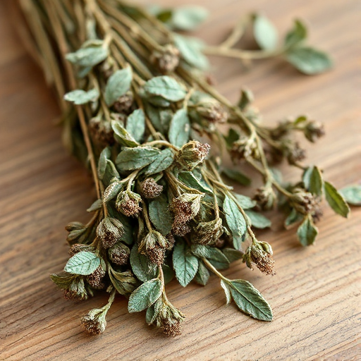

No tienes que resignarte. Hay una solución natural.
Enciclopedia botánica moderna con nombres en quechua, aimara y español. Recurso cultural gratuito. Proyecto de documentación.
Enciclopedia botánica moderna con nombres en quechua, aimara y español. Recurso cultural gratuito. Proyecto de documentación.
Enciclopedia botánica moderna con nombres en quechua, aimara y español. Recurso cultural gratuito. Proyecto de documentación.Liluama combina 4 hierbas amazonicas peruanas — graviola, noni, manayupa y flor blanca — para prevenir y combatir las infecciones urinarias sin depender solo de antibioticos.
La mayoría de suplementos solo tratan los síntomas de infecciones urinarias. Liluama es diferente: rompe el ciclo de infección al disruptir las biopelículas de E. coli. Cuando las bacterias forman biopelículas, los antibióticos no pueden penetrar. Liluama (graviola, noni, manayupa, flor blanca) previene la formación de biopelículas, evitando infecciones recurrentes donde los antibióticos fallan.

Liluama (Hierba de la Madre Tierra en quechua) nació de una misión: preservar el conocimiento ancestral sobre plantas medicinales andinas antes de que se perdiera en la globalización. Los ancianos de comunidades remotas en Perú, Bolivia y Ecuador poseen conocimientos sobre la maca, la uña de gato, el muira puama que no están documentados en los libros.
Liluama no es solo un sitio web: es un proyecto de memoria viva. Cada planta monografía incluye: (1) nombres en quechua, aimara y español, (2) usos tradicionales, (3) estudios científicos modernos, (4) foto de la planta en su hábitat, (5) mapa de distribución. Es una enciclopedia botánica moderna conectada a la sabiduría indígena.
La medicina tradicional andina es un sistema de conocimiento de miles de años. La maca fue cultivada en la zona altiplánica de Perú hace más de 2000 años. La uña de gato era usada por los incas para la artritis. El muira puama es un afrodisíaco conocido en la Amazonía. Pero gran parte de este conocimiento existe solo en la memoria oral de los ancianos y no está documentado.
Estos conocimientos están desapareciendo. Con la urbanización, los jóvenes migran a las ciudades y pierden el contacto con las plantas y los ancianos. En una generación, este conocimiento podría extinguirse. Liluama documenta y preserva este conocimiento para que esté disponible para futuras generaciones. Es herencia cultural, no solo botánica.
Liluama (Hierba de la Madre Tierra en quechua) nació de una misión: preservar el conocimiento ancestral sobre plantas medicinales andinas antes de que se perdiera en la globalización. Los ancianos de comunidades remotas en Perú, Bolivia y Ecuador poseen conocimientos sobre la maca, la uña de gato, el muira puama que no están documentados en los libros.
Liluama no es solo un sitio web: es un proyecto de memoria viva. Cada planta monografía incluye: (1) nombres en quechua, aimara y español, (2) usos tradicionales, (3) estudios científicos modernos, (4) foto de la planta en su hábitat, (5) mapa de distribución. Es una enciclopedia botánica moderna conectada a la sabiduría indígena.
La medicina tradicional andina es un sistema de conocimiento de miles de años. La maca fue cultivada en la zona altiplánica de Perú hace más de 2000 años. La uña de gato era usada por los incas para la artritis. El muira puama es un afrodisíaco conocido en la Amazonía. Pero gran parte de este conocimiento existe solo en la memoria oral de los ancianos y no está documentado.
Estos conocimientos están desapareciendo. Con la urbanización, los jóvenes migran a las ciudades y pierden el contacto con las plantas y los ancianos. En una generación, este conocimiento podría extinguirse. Liluama documenta y preserva este conocimiento para que esté disponible para futuras generaciones. Es herencia cultural, no solo botánica.
Liluama (Hierba de la Madre Tierra en quechua) nació de una misión: preservar el conocimiento ancestral sobre plantas medicinales andinas antes de que se perdiera en la globalización. Los ancianos de comunidades remotas en Perú, Bolivia y Ecuador poseen conocimientos sobre la maca, la uña de gato, el muira puama que no están documentados en los libros.
Liluama no es solo un sitio web: es un proyecto de memoria viva. Cada planta monografía incluye: (1) nombres en quechua, aimara y español, (2) usos tradicionales, (3) estudios científicos modernos, (4) foto de la planta en su hábitat, (5) mapa de distribución. Es una enciclopedia botánica moderna conectada a la sabiduría indígena.
La medicina tradicional andina es un sistema de conocimiento de miles de años. La maca fue cultivada en la zona altiplánica de Perú hace más de 2000 años. La uña de gato era usada por los incas para la artritis. El muira puama es un afrodisíaco conocido en la Amazonía. Pero gran parte de este conocimiento existe solo en la memoria oral de los ancianos y no está documentado.
Estos conocimientos están desapareciendo. Con la urbanización, los jóvenes migran a las ciudades y pierden el contacto con las plantas y los ancianos. En una generación, este conocimiento podría extinguirse. Liluama documenta y preserva este conocimiento para que esté disponible para futuras generaciones. Es herencia cultural, no solo botánica.
El 50-60% de las mujeres sufren al menos una infeccion urinaria en su vida. Despues de la menopausia, el riesgo aumenta significativamente.
Cistitis que vuelve una y otra vez. Urgencia constante, dolor pelvico y malestar que interrumpe tu dia. Hasta el 30% de las mujeres experimenta recurrencias frecuentes.
Sensacion de ardor, orina turbia, necesidad urgente y frecuente de ir al bano. Síntomas que afectan tu calidad de vida y bienestar emocional.
El uso repetido de antibioticos genera resistencia bacteriana y desequilibra tu flora natural. Tu cuerpo necesita una alternativa que refuerce sus propias defensas.
Formulado en Peru por Hilart S.A.C. con hierbas amazonicas que actúan como antimicrobianos, diureticos y antiinflamatorios naturales. Apoya la salud de tu tracto urinario desde adentro.
La acción antimicrobiana de la graviola y la flor blanca ayuda a prevenir y combatir infecciones del tracto urinario de forma natural.
El noni actua como antiinflamatorio y analgesico natural, aliviando el ardor y la irritacion del tracto urinario.
La manayupa es reconocida por su efecto diuretico suave que favorece la limpieza natural de vias urinarias y rinones.
Las hierbas amazonicas de Liluama contienen compuestos bioactivos con propiedades antisepticas y desinfectantes naturales.
La graviola aporta antioxidantes que fortalecen el sistema inmune, ayudando a tu cuerpo a defenderse contra infecciones recurrentes.
Sin quimicos sinteticos ni efectos secundarios agresivos. Formulado con hierbas de la selva amazonica peruana de uso tradicional comprobado.
Cada ingrediente de Liluama proviene de la biodiversidad amazonica del Peru, seleccionado por su eficacia en la salud urinaria femenina.

Graviola
ManayupaCompleta el formulario en esta pagina. Recibiras tu pedido en casa con envío gratuito a todo Peru. Pago contra entrega.
Con agua y preferiblemente con las comidas. La constancia es clave: manten el uso diario para mejores resultados.
Muchas usuarias notan alivio de síntomas agudos en 3-5 dias. Para prevención de recurrencia, continua por al menos 4 semanas.
Producido por Hilart S.A.C., laboratorio peruano comprometido con la calidad y la medicina natural amazonica.
Hierbas seleccionadas de la biodiversidad amazonica peruana, con siglos de uso en la medicina tradicional del Peru.
Mujeres peruanas de 30 a 65 anos eligen Liluama para cuidar su salud urinaria de forma natural y sin efectos secundarios agresivos.
Suplemento natural peruano formulado con graviola, noni, manayupa y flor blanca para apoyar la salud del tracto urinario femenino. Fabricado por Hilart S.A.C.
Se recomienda tomar 2 capsulas al dia con agua, preferiblemente con las comidas. Para prevención, mantener uso constante.
Formulado con ingredientes naturales amazonicos y generalmente bien tolerado. Consulte a su médico si esta embarazada, lactando o toma medicamentos.
Para síntomas agudos, muchas usuarias notan alivio en 3-5 dias. Para prevención de recurrencia, se recomienda uso de al menos 4 semanas.
Puede ordenar directamente desde esta pagina con envío a todo Peru. Pago contra entrega.
Explora nuestra coleccion de monografias científicas sobre plantas medicinales andinas y amazonicas, y guias de condiciones de salud.
Ordena Liluama hoy con envío gratuito a todo Peru. Hierbas amazonicas que cuidan tu salud urinaria de forma natural.
Conoce la evidencia cientifica detras de los ingredientes:
Fuente: Botanica Andina — portal de salud basado en evidencia cientifica.
Explora todos los recursos de liluama.pe: